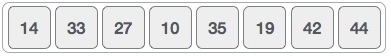
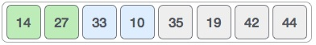
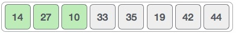

This is a in-place comparison based sorting algorithm. Here, a sub-list is maintained which is always sorted. For example, the lower part of an array is maintained to be sorted. A element which is to be 'insert'ed in this sorted sub-list, has to find its appropriate place and insert it there. Hence the name insertion sort.
The array is searched sequentially and unsorted items are moved and inserted into sorted sub-list (in the same array). This algorithm is not suitable for large data sets as its average and worst case complexity are of Ο(n2) where n are no. of items.
We take an unsorted array for our example.
Insertion sort compares the first two elements.
It finds that both 14 and 33 are already in ascending order. For now, 14 is in sorted sub-list.
Insertion sort moves ahead and compares 33 with 27.

And finds that 33 is not in correct position.

It swaps 33 with 27. Also it checks with all the elements of sorted sublist. Here we see that sorted sub-list has only one element 14 and 27 is greater than 14. Hence sorted sub-list remain sorted after swapping.

By now we have 14 and 27 in the sorted sublist. Next it compares 33 with 10,.
These values are not in sorted order.

So we swap them.
But swapping makes 27 and 10 unsorted.

So we swap them too.

Again we find 14 and 10 in unsorted order.

And we swap them. By the end of third iteration we have a sorted sublist of 4 items.

This process goes until all the unsorted values are covered in sorted sublist. And now we shall see some programming aspects of insertion sort.
Now we have a bigger picture of how this sorting technique works, so we can derive simple steps by which we can achieve insertion sort.
Step 1 − If it is the first element, it is already sorted. return 1; Step 2 − Pick next element Step 3 − Compare with all elements in the sorted sub-list Step 4 − Shift all the elements in the sorted sub-list that is greater than the value to be sorted Step 5 − Insert the value Step 6 − Repeat until list is sorted
procedure insertionSort( A : array of items )
int holePosition
int valueToInsert
for i = 1 to length(A) inclusive do:
/* select value to be inserted */
valueToInsert = A[i]
holePosition = i
/*locate hole position for the element to be inserted */
while holePosition > 0 and A[holePosition-1] > valueToInsert do:
A[holePosition] = A[holePosition-1]
holePosition = holePosition -1
end while
/* insert the number at hole position */
A[holePosition] = valueToInsert
end for
end procedure
To see insertion sort implementation in C programming language, please click here.